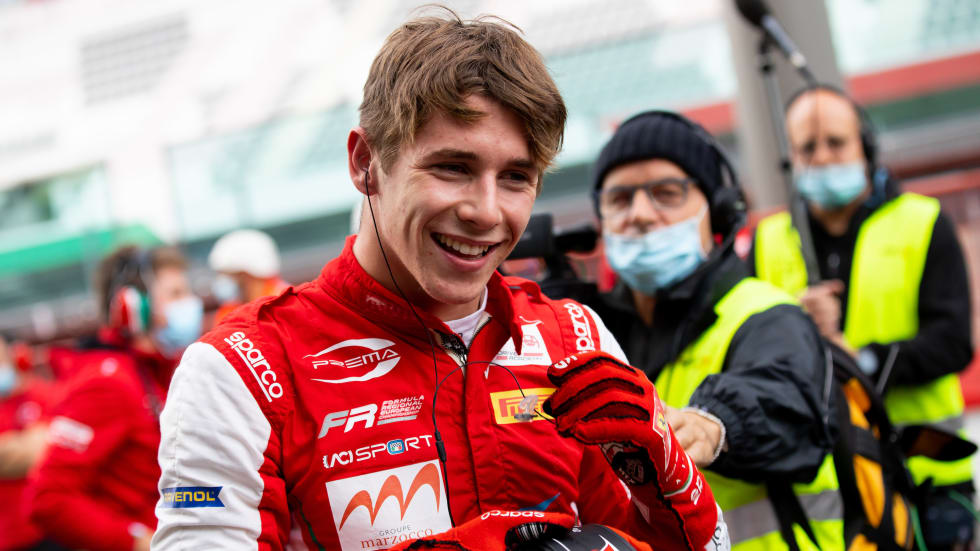
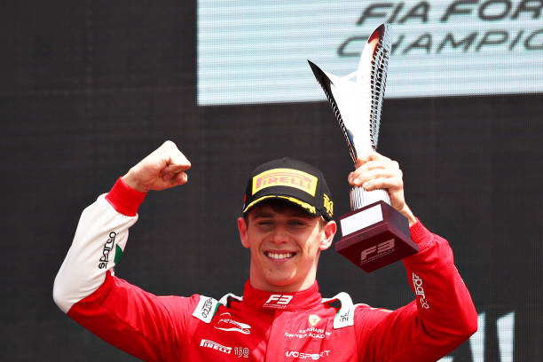
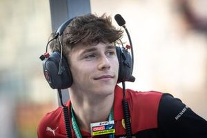

|
| Inicio |
Biografia |
Logros |
Contacto |
Sus logros o datos interesantes |
|  |
Piloto de carreras monegasco conocido por ser miembro de la Ferrari Driver Academy. Compitió en el Campeonato de Gran Premio Virtual del 2021 para Ferrari. Fue coronado Campeón de la Fórmula Regional Asia 2022 al año siguiente |
la vida familiar:Sus padres se llaman Pascale Leclerc y Hervé Leclerc. Tiene dos hermanos mayores.
Fue miembro del Equipo Júnior de Sauber hasta 2020, y el mismo año fichó por la Academia de pilotos de Ferrari. Es el hermano menor del piloto de Fórmula 1 Charles Leclerc |
 |
| Arthur fue piloto de desarrollo del equipo monegasco Venturi en Fórmula E. Durante ese periodo, ocupó el puesto de piloto de simulador. Continuó con el equipo en la temporada 2018-19 |
En 2018 fue promovido a carreras de monoplazas, participando en el Campeonato Francés de F4. Logró dos victorias en ocho podios en Paul Armagnac y Magny-Cours respectivamente para poder terminar quinto en el campeonato |
|  |
| @Derechos reservados2022 |